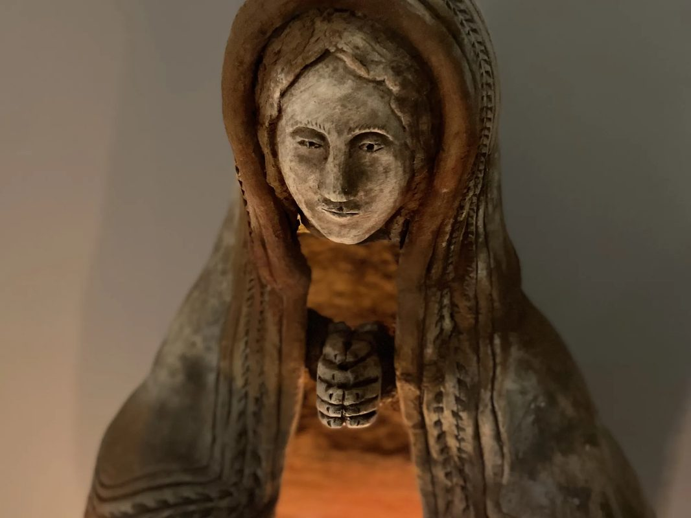
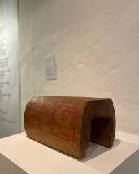
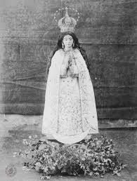
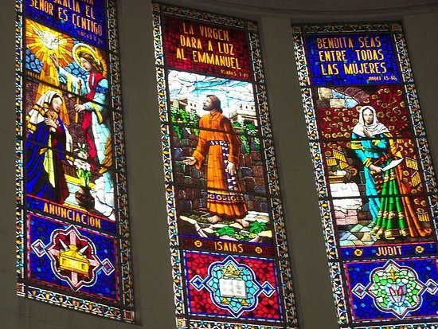

La Imagen Original: Descripción y Análisis

La imagen original de la Virgen de Itatí es una obra de arte que condensa en sus 35 centímetros de madera policromada varios siglos de historia y dos civilizaciones en diálogo. Su autor es desconocido: podría ser un tallista español o criollo llegado con los primeros misioneros, un artesano mestizo formado en los talleres de las reducciones paraguayas, o incluso un indígena guaraní que incorporó la técnica europea de la talla en madera. Esta incertidumbre sobre su origen no hace sino añadir misterio y profundidad a la obra.
La Virgen está representada de pie, en una postura firme pero no rígida, con el Niño Jesús sostenido en el brazo izquierdo. El Niño, también de tamaño pequeño y proporciones hieráticas características del arte colonial, lleva en su mano izquierda un objeto que algunas fuentes describen como una bola del mundo (orbe) y otras como un libro, símbolo de su doble condición de Señor del universo y Maestro de la humanidad. La mano derecha de la Virgen, extendida hacia adelante y ligeramente hacia abajo, señala al Niño en un gesto que es al mismo tiempo presentación y invitación: "Aquí está el camino, aquí está el que buscás".
El rostro de la Virgen es el aspecto más comentado por quienes la describen. De rasgos suaves, con los ojos levemente inclinados hacia abajo en una expresión de recogimiento y ternura, el semblante de la imagen transmite lo que los correntinos llaman "la mirada de Mamá Itatí": una serenidad que no excluye la compasión, una dulzura que no reniega de la fortaleza. Algunos historiadores del arte sacro colonial señalan que en el modelado del rostro se detectan rasgos que insinúan el mestizaje cultural: ni puramente europeos ni puramente guaraníes, sino algo nuevo que surgió del encuentro entre dos mundos.
— Sobre la imagen de Itatí
El Estilo Barroco Hispano-Guaraní

El arte barroco hispano-guaraní es uno de los fenómenos más fascinantes de la historia del arte en América Latina. Surgió en las Reducciones Jesuíticas y Franciscanas del Litoral durante los siglos XVII y XVIII, cuando los misioneros enseñaron a los artesanos guaraníes las técnicas de la escultura y la pintura europeas para decorar las iglesias de las reducciones. El resultado fue un arte híbrido y original: las formas, las proporciones y los temas eran los del barroco europeo, pero la sensibilidad, los detalles ornamentales y a veces las proporciones del rostro incorporaban la mirada guaraní.
Las características más reconocibles del barroco guaraní en la escultura incluyen la frontalidad hierática de las figuras (heredada del arte medieval europeo que llegó a través de los misioneros), la policromía intensa y plana de los paños, la preferencia por maderas locales como el lapacho o el cedro misionero, y la presencia de motivos decorativos en las vestiduras que combinan flores y hojas propias de la flora del Litoral con los motivos geométricos del repertorio barroco europeo.
La imagen de Itatí, aunque más antigua que el período de mayor florecimiento de las reducciones jesuíticas (segunda mitad del siglo XVII), pertenece a este ambiente artístico y cultural. Su relativa pequeñez —característica común en las imágenes de culto portátiles de los primeros misioneros, que debían ser transportables— y su policromía sobria la distinguen de las grandes esculturas de altar de las reducciones, pero comparte con ellas la intención fundamental: crear un objeto de belleza sagrada que sirva de puente entre la fe que se anuncia y la cultura que la recibe.
Los Mantos y la Corona

A lo largo de los siglos, la pequeña imagen original de la Virgen de Itatí ha sido cubierta con elaborados mantos bordados que la transforman en una figura de majestuosa riqueza visual. Esta tradición de vestir las imágenes —conocida como "imaginería vestida" o "de vestir"— es común en la escultura barroca iberoamericana y tiene raíces tanto en la práctica medieval europea de adornar las imágenes de culto como en la sensibilidad indígena hacia el adorno y el color como expresión de lo sagrado.
El guardarropa de la Virgen de Itatí es uno de los más ricos de la Argentina. Lo conforman decenas de mantos de seda, brocado, terciopelo y tela bordada, cada uno de ellos donado por familias, gremios, instituciones o individuos en cumplimiento de promesas o en agradecimiento por gracias recibidas. Los bordados —realizados principalmente a mano por bordadoras correntinas especializadas— reproducen motivos florales, ángeles, rayos de sol y escenas bíblicas con una finura de trabajo que los convierte en piezas de artesanía de alto valor. Algunos mantos históricos, deteriorados por el uso y el tiempo, se conservan en el museo del santuario.
La corona que luce la Virgen de Itatí es de oro, con incrustaciones de piedras preciosas donadas por fieles de todo el país. Fue colocada formalmente en la Coronación Canónica de 1900, con autorización del Papa León XIII, y restaurada y enriquecida varias veces a lo largo del siglo XX. La corona del Niño Jesús, más pequeña, también es de orfebrería fina. Ambas joyas son custodiadas con medidas de seguridad especiales y solo se exhiben en la imagen durante las grandes celebraciones litúrgicas.
Los Exvotos y el Arte Devocional

El santuario de Itatí conserva una de las colecciones de exvotos más interesantes del país. Los exvotos —del latín ex voto suscepto, "en cumplimiento de un voto"— son objetos donados al santuario en señal de gratitud por gracias recibidas. En el caso de Itatí, esta colección incluye pinturas votivas naïf que representan accidentes, enfermedades y situaciones de peligro de las que el donante salió con vida gracias a la intercesión de la Virgen; fotografías enmarcadas de personas enfermas que se recuperaron; muletas, bastones y aparatos ortopédicos dejados por quienes recuperaron la movilidad; medallas militares de sobrevivientes de conflictos; y miles de placas de metal grabadas con inscripciones de agradecimiento.
Las pinturas votivas son especialmente valiosas desde el punto de vista artístico y antropológico. Realizadas generalmente por pintores autodidactas o de formación popular, muestran escenas de la vida cotidiana del nordeste argentino —naufragios en el Paraná, accidentes en las ruta 12, enfermedades tropicales, nacimientos difíciles— en las que la figura de la Virgen de Itatí aparece sobre el lugar del suceso, con los rayos característicos de su iconografía, como señal de protección divina. Estas pinturas son documentos etnográficos únicos y obras de arte popular de un valor que la academia ha comenzado a reconocer.
La práctica del exvoto conecta a los fieles correntinos con una tradición que tiene miles de años de antigüedad en la historia de las religiones humanas y que en el catolicismo popular latinoamericano adquirió una vitalidad y una expresividad particulares. En Itatí, como en Guadalupe, Luján o Fátima, el exvoto es el lenguaje con el que el pueblo dice gracias sin palabras.
Reproducciones e Imagen Popular
La imagen de la Virgen de Itatí es una de las más reproducidas de la Argentina. Desde las estampitas de papel que se llevan en la billetera hasta las esculturas de tamaño natural que presiden los altares de las parroquias correntinas, pasando por las imágenes en yeso, cerámica, metal y madera que decoran los hogares del Litoral: la Virgencita de Itatí está en todas partes en su tierra.
La imagen canónica de las reproducciones replica la postura de la imagen original: la Virgen de pie, con el Niño en el brazo izquierdo y la mano derecha señalando. En la mayoría de las versiones populares, la imagen aparece vestida con el manto azul y la corona de oro que la visten en las grandes fiestas, aunque la imagen original, debajo de los ornamentos, solo tiene la policromía de la talla de madera. Esta superposición de la imagen "vestida" sobre la imagen "desnuda" es característica de la devoción popular y crea una imagen compuesta que vive en el imaginario colectivo con independencia de cómo se vea la imagen en cada momento concreto.
El chamamé y la poesía popular correntina han aportado otro registro de la imagen: el de la palabra. Decenas de copleros, poetas y letristas del nordeste han escrito versos sobre la Virgencita de Itatí que la describen desde el río, desde el camino, desde la infancia, desde el dolor y desde la alegría. Esta imagen literaria —a veces íntima y coloquial, a veces solemne y épica— completa el retrato de una advocación que no solo se ve sino que se siente y se canta.
Seguí explorando la Virgen de Itatí
Este artículo forma parte de una serie completa sobre la advocación itateña:
Artículo Principal
Historia, origen y devoción popular de la Virgen de Itatí.
Ir al hub →El Santuario
La basílica de Itatí y la visita de Juan Pablo II en 1987.
Leer artículo →El Patronazgo
Cómo la Virgen se convirtió en patrona de Corrientes.
Leer artículo →Oraciones
Oraciones, novena y jaculatorias a la Virgen de Itatí.
Rezar →